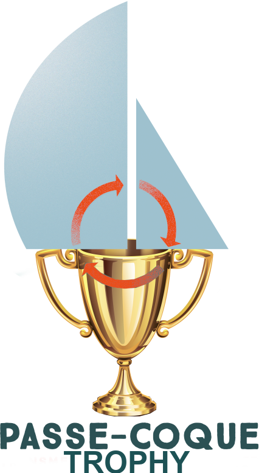

<div class="boat-card" header="Passe-Coque Trophy">

    <!--div class="tab" style="margin-top: 30px; margin-bottom: 10px; display: grid; grid-template-columns: auto auto auto auto auto auto auto auto auto auto auto;"> 
        <button class="tablinks tab-active" onclick="openTab(event, 'pc-trophy-01');" title="Projet">Projet</button>
        <button class="tablinks" onclick="openTab(event, 'pc-trophy-02');">D&eacute;tails</button>
        <button class="tablinks" onclick="openTab(event, 'pc-trophy-03');">Partenaires</button>
        <button class="tablinks" onclick="openTab(event, 'pc-trophy-04');">Contact</button>
        <button class="tablinks" onclick="openTab(event, 'pc-trophy-05');">Nous soutenir</button>
    </div-->

    <div class="pcc-dialog-tab-content">
        <div id="pc-trophy-01" class="tab-section" style="display: block;">

            <!--div style="vertical-align: middle;"> <b>Projets Low Tech&nbsp;!</b> </div-->
            <div class="txt-img-div-2" style="margin-top: 0;">
                <!--img src="./images/trophy.png" style="width: 50%; margin: auto; margin-top: 5px;"-->
                
                <div style="padding: 14px;">
                    <h2>Passe-Coque Trophy</h2>
                    <div>
                        The Passe-Coque Trophy is proof by example, it is the way to see the Passe-Coque fleet grouped and 
                        sailing together to prove that we can sail usefully and sustainably with all the available boats. 
                        The Passe-Coque Trophy will be an event in itself from 2026 but until the end of this year this event 
                        is associated with existing events in our region:<br/>
                        Semaine du Golfe, and especially the Rubi's Cup.<br/>
                        The "Route des Hortensias" could also be part of the Passe-Coque Trophy!
                    </div>
                </div>
            </div>
        </div>

        <div id="pc-trophy-02" class="tab-section" style="display: none;">
            <h2>D&eacute;tails</h2>
            <div class="project-content" style="display: grid; grid-template-columns: 100%;">
                <div style="overflow: auto;">
                    <div>
                    </div>
                </div>
            </div>
        </div>

        <div id="pc-trophy-03" class="tab-section" style="display: none;">
            <h2>Partenaires</h2>
            <div style="display: grid; grid-template-columns: 100%;">
                <div>
                </div>
            </div>
        </div>

        <div id="pc-trophy-04" class="tab-section" style="display: none;">
            <h2>Plus d'infos...</h2>
            <div style="display: grid; grid-template-columns: 100%;">
                <div>

                </div>
            </div>
        </div>

        <div id="pc-trophy-05" class="tab-section" style="display: none;">
            <h2>Nous soutenir financi&egrave;rement</h2>
            <div style="display: grid; grid-template-columns: 100%;">
                <div>

                </div>
            </div>
        </div>
    </div>

</div>
